1 Introdução
O presente cenário mundial acerca de mortes e lesões relacionadas à sinistros de trânsito posam sérios desafios à saúde pública global, e as tendências evidenciadas pelos dados atuais indicam que esta realidade deve continuar a se manter pelo futuro próximo (World Health Organization 2018). Sendo uma das causas de mortes mais comuns no mundo, as ocorrências de sinistros de trânsito afetam principalmente pedestres, ciclistas e motociclistas, além de induzir danos materiais, tanto em questão de propriedade particular quanto pública. Isto estimula países a buscarem métodos estimativos sobre os efeitos sociais, econômicos e epidemiológicos da taxa de mortes no trânsito e como se traduzem em custos e perdas na produtividade da sociedade em geral (Rodríguez, Jattin, e Soracipa 2020).
A segurança viária pode se correlacionar ao estado de desenvolvimento de uma região, visto que é uma característica da mobilidade urbana. Entende-se que as mortes no trânsito dependem de diversos fatores estruturais, socioeconômicos e ambientais (Zhong-xiang et al. 2014). Assim, elevadas taxas de sinistros colaboram no diagnóstico de problemas da segurança pública geral, despertando o debate político sobre a regulamentação das normas viárias e apontando a carência dos sistemas da união em combater estes eventos.
Apesar da crescente adesão por itens de segurança veicular, os sinistros de trânsito permanecem como um problema de saúde pública, visto que fazem parte de um agravo que repercute por toda a sociedade (Andrade e Antunes 2019), sendo a oitava causa de óbitos em todas as faixas etárias e a principal entre indivíduos de 5 a 29 anos (World Health Organization 2018). Como previsto por modelos prévios à 2020 (Blumenberg et al. 2018), o Brasil apresentou baixo desempenho em cumprir a meta estabelecida pela Primeira Década de Ações pela Segurança no Trânsito. Neste cenário, o Plano Nacional de Redução de Mortes e Lesões no Trânsito (PNATRANS) foi desenvolvido para guiar as ações pela mobilidade segura nacional durante o período da Segunda Década de Ação pela Segurança no Trânsito (Ministério da Infraestrutura 2018), na intenção de aprimorar o desempenho da segurança viária em relação a década passada e se alinhando aos Objetivos de Desenvolvimento Sustentável estabelecidos pela Agenda 2030 da Organização das Nações Unidas (ONU). Para atingir tais metas, o Art. 3º da Resolução Contran Nº 870 relata que o PNATRANS se apoia em seis principais pilares: gestão da segurança no trânsito, vias seguras, segurança veicular, educação para o trânsito, atendimento às vítimas, e normalização e fiscalização (Conselho Nacional de Trânsito 2018).
A busca pela fundamentação técnica para a proposição de políticas públicas a respeito da mobilidade segura fomenta o estudo de diversas categorias de modelos preditivos para a mortalidade no trânsito, tanto para estimar o número de ocorrências quanto para avaliar a influência das variáveis consideradas. Modelos lineares multivariados foram ajustados para extrair tendências sobre os critérios aferidos (Blumenberg et al. 2018; Cai, Zhu, e Yan 2015), assim como modelos preditivos baseados em cadeia de Markov (Seneta 1996; Jin, Zheng, e Geng 2020). Outras abordagens utilizaram técnicas de análise de séries temporais, utilizando métodos como o ARIMA - Modelo Auto-Regressivo Integrado de Médias Móveis (Al-Ghamdi 1995) e redes neurais artificiais (Jafari et al. 2015).
Considerando o presente cenário, este estudo tem como objetivo elaborar um modelo de Aprendizado de Máquina para a previsão de mortes no trânsito em âmbito nacional e estadual no Brasil, investigando dados socioeconômicos como o PIB (Produto Interno Bruto) anual, o PIB mensal e a população nacional, fornecidos respectivamente pelo Instituto Brasileiro de Geografia e Estatística (IBGE) (Instituto Brasileiro de Geografia e Estatística 2023), Banco Central do Brasil (BACEN) (Banco Central do Brasil 2023) e Ministério da Saúde (Ministério da Saúde 2023b), tal como dados coletados das bases de dados da Polícia Federal Rodoviária (PRF) (Polícia Rodoviária Federal 2023), do Registro Nacional de Condutores Habilitados (RENACH) (Ministério dos Transportes 2023b), do Registro Nacional de Veículos Automotores (RENAVAM) (Ministério dos Transportes 2023a) e do Sistema de Informação de Mortalidade (SIM) do Ministério da Saúde (Ministério da Saúde 2023a).
A partir de todos os dados reunidos e pré-processados para a modelagem, duas principais análises foram dissertadas para aferir a capacidade preditiva das técnicas em relação a janela temporal estudada: o modelo preditivo anual (por meio de modelo de Regressão Linear) e o modelo preditivo mensal, que por sua vez, pode ser destrinchado em duas abordagens, sendo a análise de série temporal (ARIMA e Suavização Exponencial) e a análise de regressão (Regressão Linear e Regressor Random Forest).
2 Modelo Preditivo Anual
2.1 Metodologia
A obtenção dos dados de mortalidade foram efetuados através do pacote microdatasus (Saldanha 2023), elaborado para a linguagem R. Coletou-se dados oriundos do período entre 1996 e 2021. Esta escolha de intervalo temporal visa englobar a mortalidade estimada sob o protocolo da CID-10, pelo qual o banco de dados foi adequado ao estudo extraindo apenas as observações de mortes relacionadas a sinistros, ou seja, aquelas que se encaixam entre os códigos “V01” à “V89”.
As demais variáveis foram tratadas e imputadas em uma única tabela:
- Frota de veículos (RENAVAM);
- Frota de motocicletas (RENAVAM);
- Frota de automóveis (RENAVAM);
- PIB (IBGE);
- População (DataSUS);
- Quantidade de sinistros em rodovias federais (PRF);
- Quantidade de sinistros fatais em rodovias federais (PRF);
- Feridos em sinistros ocorridos em rodovias federais (PRF);
- Mortos em sinistros ocorridos em rodovias federais (PRF);
- Quantidade de condutores habilitados (RENACH).
Em razão da ausência de dados prévios à 2011 de certas fontes, o intervalo de estudo foi reduzido para 2011 a 2021.
Assim sendo, a análise exploratória dos dados (AED) foi produzida para efetivar a validade dos dados e a significância delas para a construção do modelo. É observável que diversas variáveis possuem alto grau de colinearidade entre si, indicando que a modelagem utilizando todos os atributos poderia ser afetada por uma multicolinearidade, assim, podendo resultar em um modelo com baixa performance. A correlação de Spearman foi utilizada e seus resultados estão apresentados à seguir na Figura 1
As variáveis foram avaliadas em relação a sua frequência e densidade. Considerou-se que, em geral, elas possuem comportamentos que devaneiam da normalidade em questão de suas distribuições de probabilidade. Por este motivo, o método mais adequado utilizado para o cálculo dos coeficientes de correlação foi o de Spearman, visto que é uma medida não-paramétrica. Em seguida, cada variável foi testada com um modelo linear, considerando a quantidade de mortes como variável dependente para encontrar seus \(p\)-valores e métricas de erro quando investigadas individualmente.
Desta forma, a próxima etapa inclui a engenharia dos atributos para a otimização do modelo. O estudo inferencial mostra como diversas variáveis consideradas possuem alta colinearidade, congruente com as relações reais que uma categoria de dado têm com a ocorrência de outro. Por exemplo, a quantidade de mortes em sinistros de trânsito é diretamente correlacionada com a quantidade de sinistros fatais, que por sua vez é correlacionada com a quantidade de sinistros totais. As três variáveis, em adição à quantidade de feridos, estão apresentadas na série temporal da Figura 2 à seguir.

Outra variável que deve ser analisada individualmente é o número de condutores, que possui uma alta correlação com a população e um comportamento similar em questão da sua contribuição ao modelo. Para verificar se o número de condutores possui um acréscimo homogêneo ao longo do período estudado, calcula-se a quantidade de novos condutores por ano, como visto na Figura 3, denotando como o ano de 2020 sofreu uma brusca queda de novos indivíduos, possivelmente devido aos impactos da pandemia. Durante a elaboração do modelo, a variável condutores apresentou um melhor desempenho que a variável população, comparando seus \(p\)-valores

Os atributos altamente colineares de menor influência nas predições foram deletados do conjunto de dados a fim de preservar a capacidade de generalização do modelo, mitigando os efeitos de um possível sobreajuste. A quantidade de mortos em rodovias federais foi considerada uma variável redundante, sendo removida. O PIB, a população e a quantidade de feridos apresentaram desempenho muito inferior, assim foram consideradas menos atuantes na precisão dos resultados e não foram consideradas na elaboração do modelo consolidado.
Após a seleção das variáveis de melhor desempenho, a base de dados foi padronizada a fim de otimizar sua performance e estabilidade no momento de ajuste do modelo. Os coeficientes da regressão linear múltipla estão apresentados à seguir:
| Variável | Coeficiente | P-valor |
|---|---|---|
| Intercept | 37.874 | 0,00 |
| Sinistros fatais em rodovias federais | 8.159 | 0,04 |
| Frota de veiculos | 13.852 | 0,22 |
| Condutores habilitados | -15.134 | 0,23 |
| Sinistros em rodovias federais | -4.689 | 0,24 |
2.2 Resultados e Discussão
A redução da disponibilidade de dados tornou inviável a aplicação de técnicas de avaliação de modelo como a separação de conjuntos para treino e teste ou a validação cruzada (Cross validation). Por outro lado, a capacidade do algoritmo regressivo pode ser mensurada pelo comparação entre os dados de mortes iniciais com o produto encontrado pelo modelo, conforme apresentado na Figura 4.

O modelo foi utilizado para prever a ocorrência de mortes relacionadas à sinistros de trânsito em 2022, recebendo como input os respectivos dados das bases anteriormente consultadas. A predição aponta a tendência anual das mortes, com limites de erro considerados em um intervalo de confiança, conforme apresentado na Figura 5. O valor previsto para 2022, com base no modelo efetuado, resultou em 33.725 mortes, com um intervalo de confiança entre 31.286 e 36.164 mortes.

Os métodos selecionados para medir o desempenho do modelo foram a Raiz Quadrada do Erro Médio (Root Mean Squared Error - RMSE), o Erro Médio Absoluto (Mean Squared Error - MAE) e o R-quadrado - \(R^2\). Investigando as métricas de erros com base na comparação do conjunto de dados gerado ao inicial, têm-se:
| Métrica | Valor |
|---|---|
| RMSE | 687,68 |
| MAE | 607,86 |
| R² | 0,98 |
Com o valor previsto para 2022, foi possível realizar cálculo das taxas de mortos por 100 mil habitantes e por 10 mil veículos, com o propósito de observar suas tendências. A Figura 6 explicita a crescente taxa de mortes por 100 mil habitantes, apresentando uma estimativa de 16,61 em 2022.

A taxa de mortes por 10 mil veículos resultou em uma previsão de 2,93 em 2022, como mostrada na Figura 7. O valor representa uma queda em comparação aos anos anteriores, o que pode ser uma consequência do aumento da frota de veículos em relação às mortes no trânsito.

A Figura 8 a seguir apresenta uma comparação entre os dados de mortes previstos e reais.

O valor obtido da previsão implica em uma leve queda de 7,4% no número de mortes em relação ao ano anterior (2021), que registrou 33.813 casos. Conforme a análise dos dados, 2021 foi o segundo ano consecutivo a apresentar um aumento em fatalidades no trânsito. O intervalo de confiança mostra como este pode ser o caso de 2022 novamente, não obstante da diminuição prevista para as mortes. Ademais, é notável que, apesar da intensidade das correlações dos preditores selecionados para o estudo, a resolução temporal anual permanece como um gargalo para a análise dos sinistros de trânsito, já que a disponibilidade de dados é limitada.
3 Modelo Preditivo Mensal
3.1 Metodologia
O modelo preditivo de mortes no trânsito anteriormente criado possuia uma resolução temporal anual que impedia a predição precisa de anos posteriores aos usados para seu ajuste. Visando melhorar o desempenho das predições e atualizar o modelo para uma resolução mensal e estadual, os dados coletados foram reprocessados e novas técnicas foram aplicadas para o estudo das variáveis. Pelo fato de algumas das bases de dados consideradas anteriormente não possuírem disponibilidade da unidade de tempo desejada, os atributos considerados para este estudo foram apenas os seguintes:
- Frota (RENAVAM);
- Produto Interno Bruto - PIB (Banco Central do Brasil);
- Quantidade de sinistros, sinistros fatais e feridos em sinistros ocorridos em rodovias federais (PRF);
- Mortes em sinistros de trânsito (DATASUS).
A fim de melhor compreender o comportamento destas variáveis em uma resolução temporal maior, as seguintes visualização demonstram a variação de cada atributo considerado conforme o tempo do período disponível para estudo:

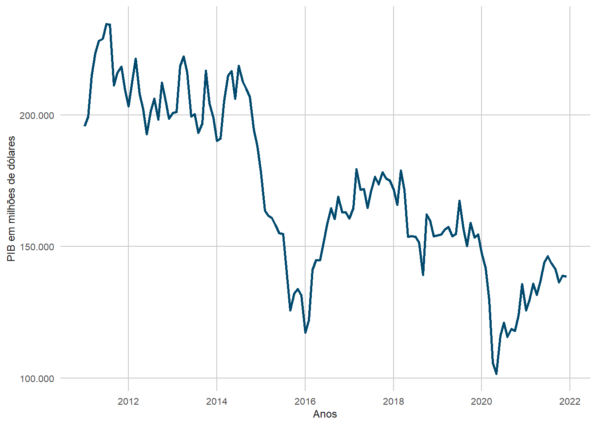

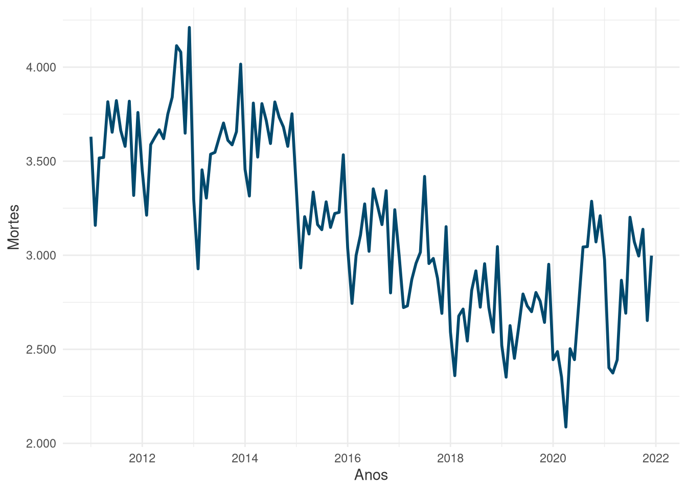
3.1.1 Análise de Série Temporal
A análise de séries temporais foi efetuada a partir da regressão de um modelo de melhor ajuste sob uma sequência de observações de um evento em um determinado intervalo de tempo de unidades uniformes, sendo estas séries representadas em função do tempo como sua única variável preditora. Entre as vantagens de modelos de série temporal, uma delas é o fato de não necessitarem de outras variáveis e de serem capazes de prever grandes períodos a frente, apesar de serem mais dificilmente ajustadas em comparação a modelos determinísticos convencionais.
3.1.1.1 SARIMA
O primeiro modelo avaliado é o Seasonal Autoregressive Integrated Moving Average (SARIMA), uma forma de ARIMA que leva em consideração a sazonalidade da série temporal. Observando a decomposição da série, têm-se as seguintes componentes temporais:
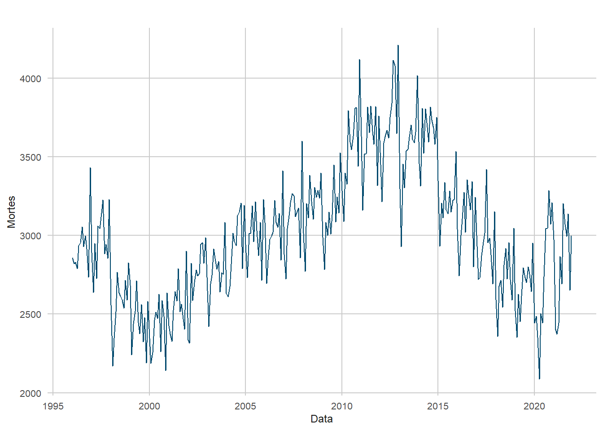
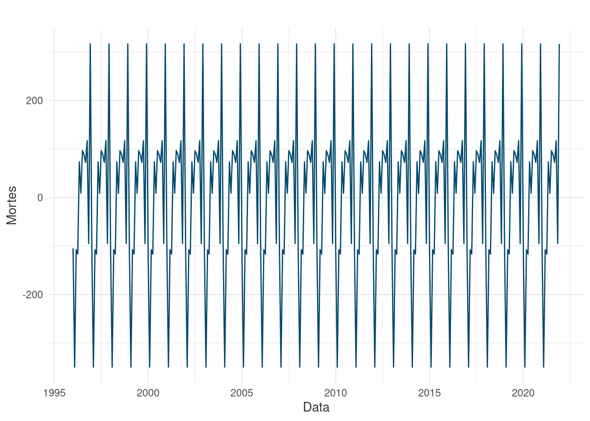
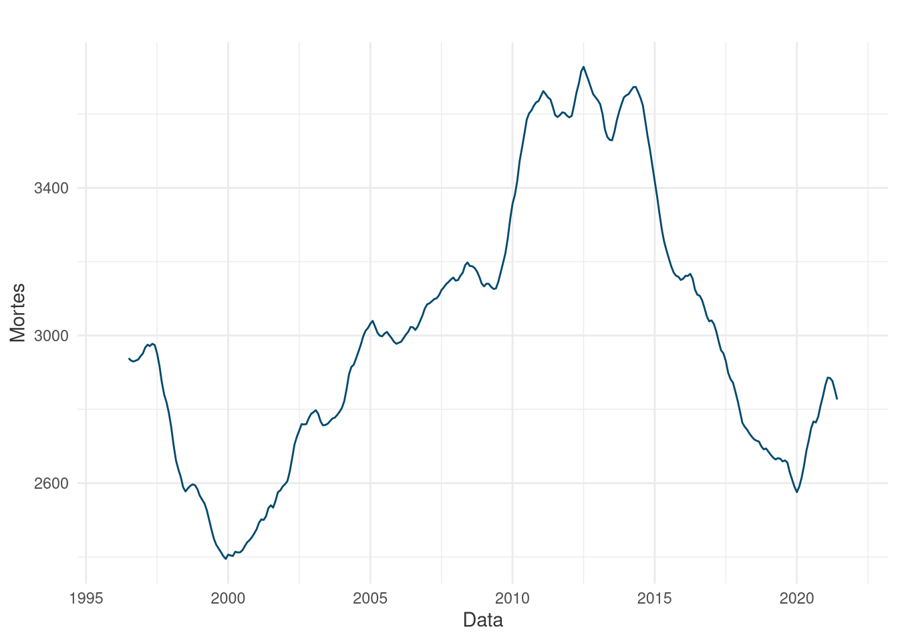
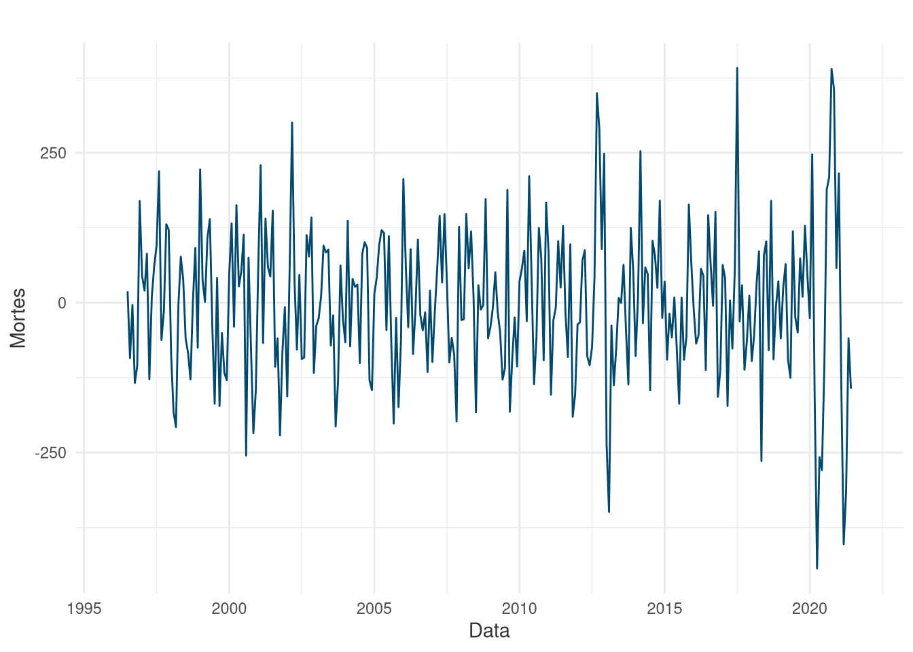
Tradicionalmente, um algoritmo da fámilia ARIMA possui três principais parâmetros: p,d,q, denotando, respectivamente, a ordem do modelo auto-regressivo, o grau de diferenciação necessária e a ordem do modelo de média móvel. Em um modelo de ARIMA sazonal, estes parâmetros podem ser expandidos em uma função ARIMA(p,d,q)(P,D,Q)m, onde a segunda parte se refere aos parâmetros da componente sazonal do modelo. Portanto, diversos modelos foram testados e avaliados com variação sobre os hiperparâmetros a fim de encontrar a melhor combinação de valores, sendo este processo automatizado por meio da função auto.arima() do pacote forecast. A Figura 13 e a Tabela 1 demonstram a visualização do desempenho do modelo e suas métricas de erro:
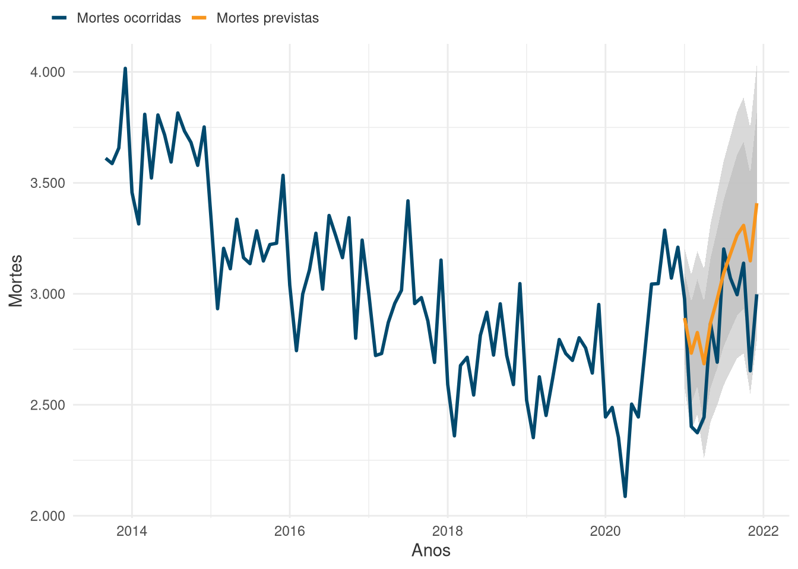
| Métrica | Valor |
|---|---|
| RMSE | 288.45 |
| RSQ | 0.54 |
| AIC | 3739.88 |
| Erro relativo | 0.08 |
3.1.1.2 Exponential Smoothing
O modelo de Suavização Exponencial constitui uma família de métodos de análise e previsão de séries temporais mais básicos que os algoritmos de média movel. O método tem como princípio que as predições feitas pelo modelo são simplesmente as médias ponderadas das observações anteriores, tendo seus pesos reduzidos exponencialmente com a passagem do tempo. Os principais tipos de modelos desta categoria são:
- Suavização Exponencial Simples
- Suavização Exponencial Dupla (Holt Linear)
- Suavização Exponencial Tripla (Método Holt-Winters)
Foi utilizado o método de Holt-Winters devido ao fato de ser considerado o mais ideal para tratamento de dados sazonais e não estacionários. A Figura 14 e a Tabela 2 demonstram a visualização do desempenho do modelo e suas métricas de erro:
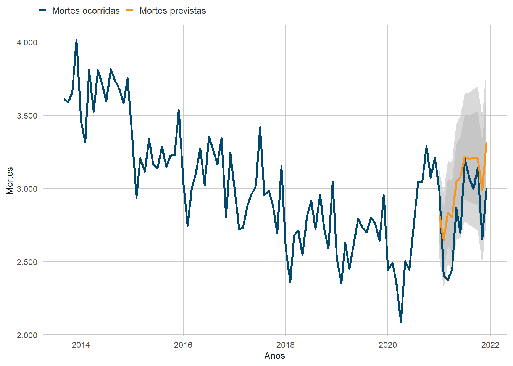
| Métrica | Valor |
|---|---|
| RMSE | 271.65 |
| RSQ | 0.65 |
| Erro relativo | 0.08 |
Baseando-se no modelo de Holt-Winters, pode-se emitir uma previsão até 2030 a fim de analisar o cenário futuro das mortes em trânsito, evidenciando o decaimento da capacidade preditiva deste tipo de modelo ao longo do tempo.
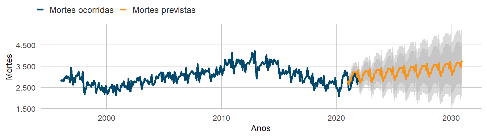
3.1.2 Modelos Regressores
3.1.2.1 Regressão Linear
A regressão linear múltipla ajustada neste estudo é equivalente ao seu modelo anual predecessor, mas com um número reduzido de variáveis consideradas para treinamento. O correlograma pode ser utilizado novamente para confirmar as correlações lineares entre os atributos:
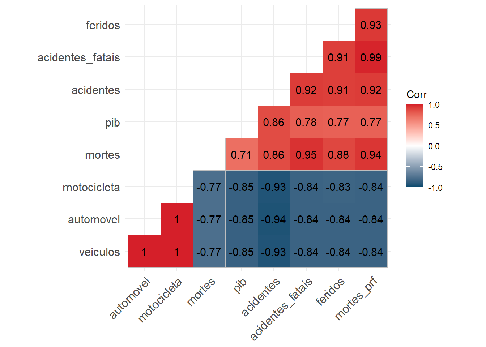
Conforme o procedimento de modelagem, a regressão linear é ajustada e representada na Tabela 3 e Figura 17:
| Métrica | Valor |
|---|---|
| RMSE | 145.39 |
| MAE | 116.04 |
| RSQ | 0.93 |
Em geral, suas métricas apresentaram maior precisão e desempenho em comparação ao modelo anual apesar de se basear em uma quantidade menor de variáveis, obtendo uma maior capacidade preditiva:
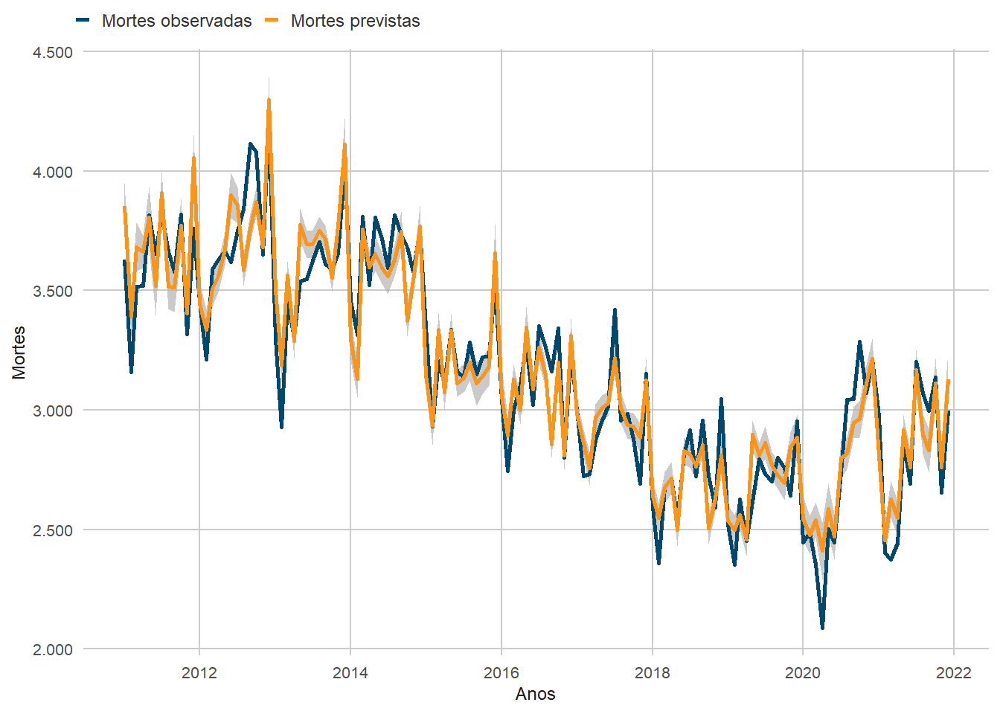
3.1.2.2 Random Forest
O modelo de regressão por Random Forest foi criado com um número fixo de 5000 árvores de decisão e treinado com a mesma repartição treino-teste utilizada na regressão linear, sendo ajustado e representado na Tabela 4 e Figura 18. Embora suas métricas apontem desempenhos inferiores em relação ao método linear, o modelo Random Forest teve precisões maiores no ano de 2021.
| Métrica | Valor |
|---|---|
| RMSE | 160.1 |
| MAE | 126.3 |
| RSQ | 0.9 |
A sobressaliência do modelo linear em relação ao Random Forest é possivelmente devido:
- Às altas correlações lineares e covariâncias entre as variáveis;
- Ao número de árvores (hiperparâmetro não otimizado) e ou;
- Ao sobreajuste.
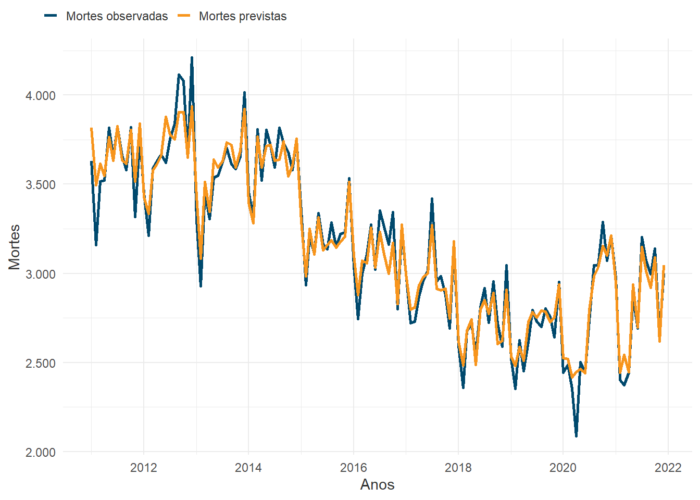
3.2 Resultados e Discussão
Após a avaliação individual de cada modelo, nota-se que diversas métricas de erros utilizadas são não normalizadas, necessitando, portanto, de uma análise comparativa do desempenho de cada técnica em relação às demais. A tabela a seguir apresenta as métricas para cada algoritmo utilizado até então, o que auxiliará na escolha de um modelo definitivo:
| Métricas de Erros | |||
| Modelo | RMSE | MAE | RSQ |
|---|---|---|---|
| Determinístico | |||
| RF Mensal | 160,11 | 126,29 | 0,90 |
| Linear Mensal | 145,39 | 116,04 | 0,93 |
| Linear Anual | 687,68 | 607,86 | 0,98 |
| Série Temporal | |||
| SARIMA | 288,45 | - | 0,54 |
| Exponential Smoothing | 271,65 | - | 0,65 |
Conforme a Tabela 5 e os gráficos da Figura 18 e Figura 17, os modelos de Regressão Linear e Random Forest mensais possuem os melhores valores de perfomance entre os métodos contemplados pelo presente estudo, com o modelo linear apresentando resultados ligeiramente superiores aos do Random Forest em geral, embora o último tenho se sobressaído ao prever as mortes de 2021 com maior exatidão, possivelmente ao acaso.
O modelo linear mensal pode ser utilizado para exemplificar os resultados preliminares para o ano de 2022, conforme denota a Figura 19, assim como foi feito com o modelo linear anual. As predições produzidas totalizam 35.379 mortes neste ano, com um aumento previsto de 1.566 (4,4%) em relação a 2011. Comparado ao modelo linear anual, o modelo mensal aparenta ser menos preciso na previsão de anos inteiros, sendo possivelmente mais adequado apenas para o monitoramento mensal.
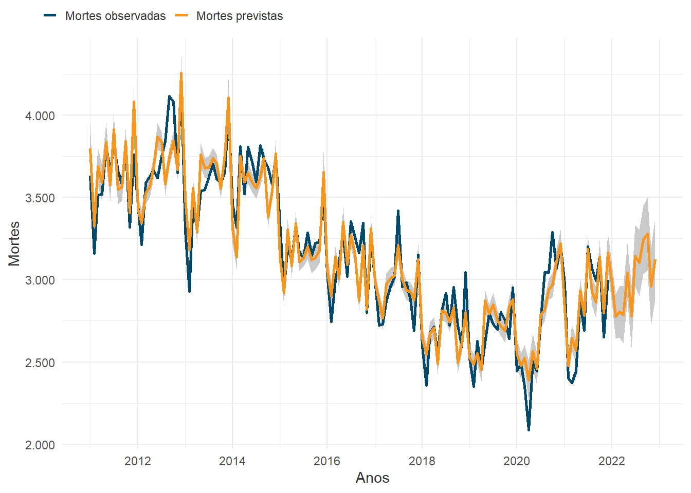
Neste sentido, a Tabela 6 representa os valores totais estimados para o ano de 2022 de cada modelo contemplado até o momento, junto com intervalos de confiança previstos por cada algoritmo. Vale destacar que o modelo Random Forest, que anteriormente teria tido métricas ligeiramente inferiores ao modelo linear mensal, obteve um valor mais próximo ao linear anual. Isto aponta que este modelo pode ser o mais adequado para estipulações temporais de curto prazo.
| Previsões para 2022 | |||
| Modelo | Previsão | Limite Mín. | Limite Máx. |
|---|---|---|---|
| SARIMA | 38.113,01 | 27.679,54 | 48.546,47 |
| Exponential Smoothing | 36.962,61 | 29.406,16 | 44.519,07 |
| Linear Anual | 33.724,66 | 31.285,43 | 36.163,89 |
| Linear Mensal | 35.378,88 | 33.048,62 | 37.709,15 |
| 1 Random Forest Mensal | 33.393,91 | - | - |
| 1 Algoritmo não produz intervalo de confiança | |||
4 Conclusão
Os modelos regressivos desenvolvidos permitem inferir que há uma tendência perceptível nas mortes causadas pelo trânsito. Mesmo que as previsões do primeiro método demonstrem que há a possibilidade de redução no ano subsequente, é visível que a predição do modelo linear anual ajustado está significativamente distante da quantidade de casos do ano de 2019, quando houve a maior redução do número de mortos desde o seu pico em 2012. Ademais, ambos os modelos mensais determinísticos e de séries temporais indicam um aumento na tendência das mortes. Isto revela um potencial relaxamento no desempenho do sistema de segurança viária e mobilidade segura nacional, visto que esta possível queda em sua eficiência precipitaria o aumento da mortalidade em sinistros de trânsito.
É fundamental destacar que as soluções de segurança viária não dependem apenas de atributos da mobilidade urbana. Inúmeros fatores socioeconômicos e de infraestrutura afetam o desempenho da segurança, indiretamente variando com as condições de desenvolvimento e maturidade tecnológica da região em questão. A mobilidade urbana é uma parte integral à toda civilização moderna, o que torna as ações para a segurança viária indispensáveis.
O cenário atual da segurança viária brasileira apresenta alguns desafios e deficiências que podem impactar na conquista das metas de redução estabelecidas em âmbito nacional pelo PNATRANS. Os dados previstos mostram um desempenho abaixo do ideal no combate da mortalidade, conferindo uma perspectiva pessimista para o início da nova década no Brasil e, caso este cenário não seja amenizado com antecedência, é improvável a ocorrência de avanços significativos nos objetivos da Segunda Década de Ação pela Segurança no Trânsito.
5 Referências
Al-Ghamdi, Ali S. 1995. «Time Series Forecasts for Traffic Accidents, Injuries, and Fatalities in Saudi Arabia». Journal of King Saud University - Engineering Sciences 7 (2): 199–217. https://doi.org/10.1016/S1018-3639(18)30627-5.
Andrade, Flávia Reis De, e José Leopoldo Ferreira Antunes. 2019. «Tendência do número de vítimas em acidentes de trânsito nas rodovias federais brasileiras antes e depois da Década de Ação pela Segurança no Trânsito». Cadernos de Saúde Pública 35 (8): e00250218. https://doi.org/10.1590/0102-311x00250218.
Banco Central do Brasil. 2023. «SGS - Sistema Gerenciador de Séries Temporais - v2.1», dezembro. https://www3.bcb.gov.br/sgspub/localizarseries/localizarSeries.do?method=prepararTelaLocalizarSeries.
Blumenberg, Cauane, Rafaela C Martins, Janaína Calu Costa, e Luiza I C Ricardo. 2018. «Is Brazil Going to Achieve the Road Traffic Deaths Target? An Analysis about the Sustainable Development Goals». Injury Prevention 24 (4): 250–55. https://doi.org/10.1136/injuryprev-2017-042473.
Cai, Hao, Dunyao Zhu, e Lixin Yan. 2015. «2015 International Conference on Transportation Information and Safety (ICTIS)». Em, 363–69. Wuhan, China: IEEE. https://doi.org/10.1109/ICTIS.2015.7232140.
Conselho Nacional de Trânsito. 2018. «RESOLUÇÃO CONTRAN Nº 870», janeiro. https://www.in.gov.br/en/web/dou/-/resolucao-contran-n-870-de-13-de-setembro-de-2021-345797892.
Instituto Brasileiro de Geografia e Estatística. 2023. «Contas Nacionais Trimestrais», setembro. https://sidra.ibge.gov.br/acervo#/S/Q.
Jafari, Seyed Ali, Sepideh Jahandideh, Mina Jahandideh, e Ebrahim Barzegari Asadabadi. 2015. «Prediction of Road Traffic Death Rate Using Neural Networks Optimised by Genetic Algorithm». International Journal of Injury Control and Safety Promotion 22 (2): 153–57. https://doi.org/10.1080/17457300.2013.857695.
Jin, Xiaohua, Jiyu Zheng, e Xingyue Geng. 2020. «Prediction of Road Traffic Accidents Based on Grey System Theory and Grey Markov Model». International Journal of Safety and Security Engineering 10 (2): 263–68. https://doi.org/10.18280/ijsse.100214.
Ministério da Infraestrutura. 2018. «Plano Nacional de Redução de Mortes e Lesões no Trânsito», janeiro. https://www.gov.br/transportes/pt-br/assuntos/transito/arquivos-senatran?b_start:int=60.
Ministério da Saúde. 2023a. «Mortalidade desde 1996 pela CID-10», setembro. https://datasus.saude.gov.br/mortalidade-desde-1996-pela-cid-10.
———. 2023b. «População residente», setembro. https://datasus.saude.gov.br/populacao-residente.
Ministério dos Transportes. 2023a. «Frota de Veículos - 2022», setembro. https://www.gov.br/transportes/pt-br/assuntos/transito/conteudo-Senatran/frota-de-veiculos-2022.
———. 2023b. «Registro Nacional de Condutores Habilitados», setembro. https://www.gov.br/transportes/pt-br/assuntos/transito/conteudo-Senatran/estatisticas-quantidade-de-habilitados-denatran.
Polícia Rodoviária Federal. 2023. «Dados Abertos da PRF», setembro. https://www.gov.br/prf/pt-br/acesso-a-informacao/dados-abertos/dados-abertos-da-prf.
Rodríguez, Javier, Jairo Jattin, e Yolanda Soracipa. 2020. «Probabilistic Temporal Prediction of the Deaths Caused by Traffic in Colombia. Mortality Caused by Traffic Prediction». Accident Analysis & Prevention 135 (fevereiro): 105332. https://doi.org/10.1016/j.aap.2019.105332.
Saldanha, Raphael. 2023. Microdatasus: pacote para download e pré-processamento de microdados do Departamento de Informática do SUS (DATASUS). https://github.com/rfsaldanha/microdatasus.
Seneta, E. 1996. «Markov and the Birth of Chain Dependence Theory». International Statistical Review / Revue Internationale de Statistique 64 (3): 255. https://doi.org/10.2307/1403785.
World Health Organization. 2018. Global Status Report on Road Safety 2018. Geneva: World Health Organization. https://apps.who.int/iris/handle/10665/276462.
Zhong-xiang, Feng, Lu Shi-sheng, Zhang Wei-hua, e Zhang Nan-nan. 2014. «Combined Prediction Model of Death Toll for Road Traffic Accidents Based on Independent and Dependent Variables». Computational Intelligence and Neuroscience 2014: 1–7. https://doi.org/10.1155/2014/103196.